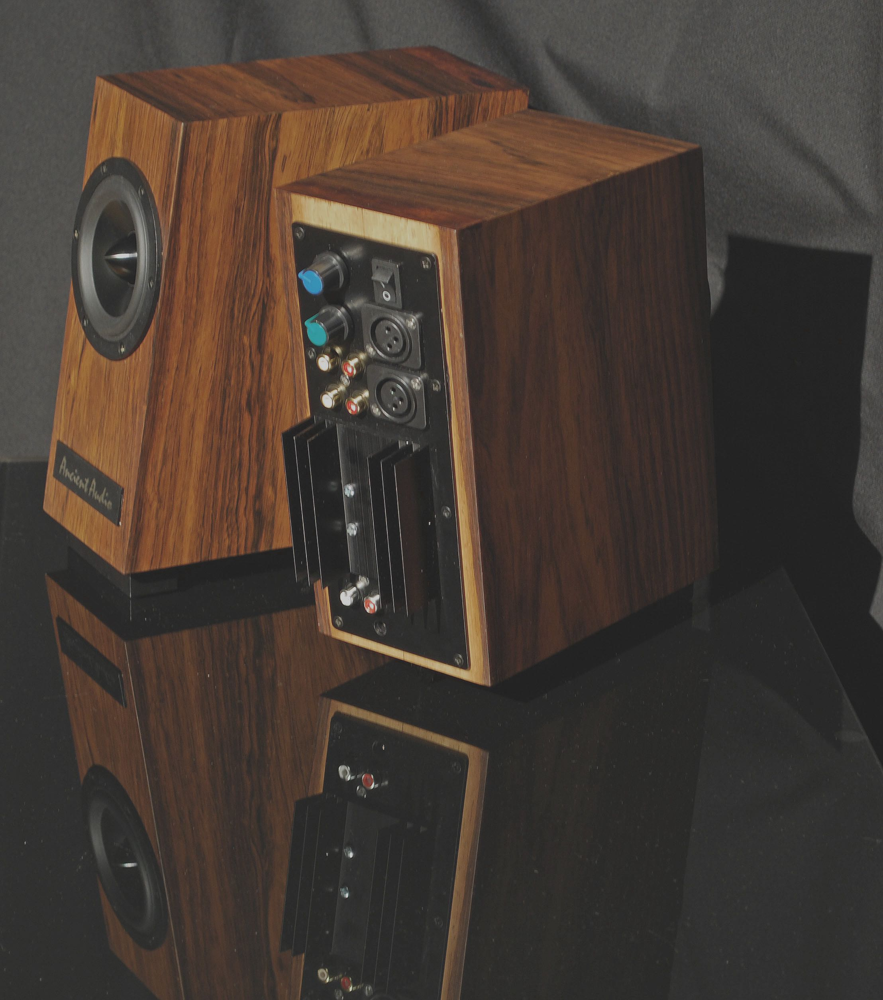

Master Oslo
The success of “Studio Oslo” (the best selling Ancient Audio product so far) stimulated the firm to design a bigger-sized construction on the basis of Ancient Audio project of the audio system for digital piano.
The correct sound reproduction of this royal instrument requires retaining an ideal timbre, dynamics and resolution of the instrument. After some modifications had been applied a new product - “Master Oslo” was born. It refers in its concept to active mini monitor speakers based on a fullrange driver.
A new bigger speaker is applied which considerably influenced not only the lower end but effectiveness as well. Bigger speaker can be driven by a more powerful amplifier. Additionally, a new sound processor increases resolution and neutrality of midrange. A pair of XLR input sockets indicates their professional origin. Moreover any signal source can be connected through two pairs of RCA sockets of different sensitivity.
Lower sensitivity is enough for such hi-fi components as CD player or DAC. The higher one, in turn, is suitable for PC, TV set or a mobile which is a favourite source of music for a younger generation of listeners.
Excellent resolution and neutrality of sound reproduction show well recorded sound during the recording session. Master Oslo is true nearfiled monitor - it can be auditionning form distances less than 1 m. However, it is tolerant for inferior sound - namely omnipresent MP3 format.
The application of single, fullrange driver enables a short listening distance. “Master Oslo” is a true nearfiled monitor, it can be auditioned form distance of 1 meter or shorter.
Master Oslo Last year Ancient Audio worked out a small active monitor speakers called “Studio Oslo”. Originally this was supposed to be a curiosity for audiophiles of modest means. It was also designed as a tool for small recording studios. Eventually it turned out to be an ideal device for domestic use.
Low price, small size, direct and lively sound when connected to a CD player , PC, TV-set or even a mobile turned out to be an immediate hit as there were no such products on the market.
The success of “Studio Oslo” (the best selling Ancient Audio product so far) stimulated the firm to design a bigger-sized construction on the basis of Ancient Audio project of the audio system for digital piano. The correct sound reproduction of this royal instrument requires retaining an ideal timbre, dynamics and resolution of the instrument.
After some modifications had been applied a new product - “Master Oslo” was born. It refers in its concept to active mini monitor speakers based on a fullrange driver. A new bigger speaker is applied which considerably influenced not only the lower end but effectiveness as well. Bigger speaker can be driven by a more powerful amplifier.
Additionally, a new sound processor increases resolution and neutrality of midrange. A pair of XLR input sockets indicates their professional origin. Moreover any signal source can be connected through two pairs of RCA sockets of different sensitivity. Lower sensitivity is enough for such hi-fi components as CD player or DAC.
The higher one, in turn, is suitable for PC, TV set or a mobile which is a favourite source of music for a younger generation of listeners. Excellent resolution and neutrality of sound reproduction show well recorded sound during the recording session.
Master Oslo is true nearfiled monitor - it can be auditionning form distances less than 1 m. However, it is tolerant for inferior sound - namely omnipresent MP3 format. The application of single, fullrange driver enables a short listening distance.
“Master Oslo” is a true nearfiled monitor, it can be auditioned form distance of 1 meter or shorter. Similarly to “Studio Oslo” the core idea behind the “Master Oslo” is its original signal processor. Designed in order to perfectly reproduce the sound of piano it had to meet highly restrictive requirements. That is the reason why the work on it have been carried on for over a year. The casing is firmly joined to the base.
The bass – reflex port is directed downward but the flow of air is directed through a slit both forward and sideways. Vibrations have been considerably reduced when compared to a former “Studio Oslo” model. The base also provided for a greater stability of this speaker . A greater volume of reproduced sound and bass makes it possible to be used in greater space.
In most cases one can dispense with a subwoofer. Needless to say that in need of greater levels of sound volume you can couple this speaker with a dedicated subwoofer – the “Sub Oslo” to increase bass dynamics.
The speakers can easily be mounted by means of provided stands. Thanks to its small size but extraordinary quality of sound “Master Oslo” will surely be exceptional tool for field recordings. Those who travel a lot will find a professional, solid case for speaker transportation very useful and handy.